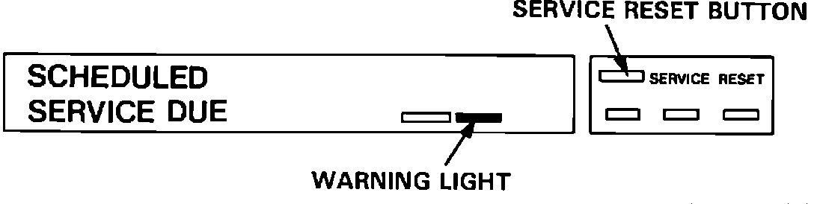
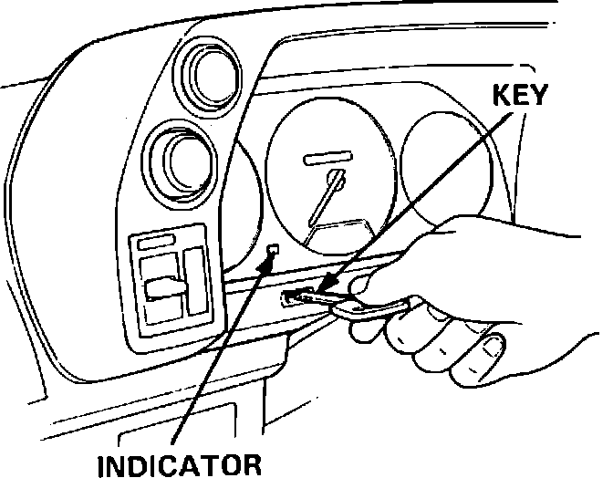

Maintenance: Service and Repair
Fig. 2 Resetting Scheduled Service Due Lamp, Electronic Type:

SCHEDULED SERVICE DUE LIGHT -- ELECTRONIC INFORMATION CENTER: 1990 AND EARLIER MODELS.
1. Every 7500 miles, on Legend models, a "SCHEDULED SERVICE DUE" warning light will come on as a reminder to change oil and oil filter, Fig 2. When engine oil and oil filter change have been completed, reset reminder light.
2. To reset reminder light, locate the flip-up door next to the maintenance light display. Flip the "SERVICE RESET" door open. With ignition switch in the "ON" position, press "RESET" button for 3 seconds. To verify reset, turn ignition switch off and on, light should not come on.
Fig. 1 Resetting Maintenance Indicator, Standard Type (Typical Location Shown):

MAINTENANCE REQUIRED INDICATOR -- STANDARD TYPE INSTRUMENTS: 1991 AND LATER MODELS.
1. Every 7500 miles, on Legend models, a "MAINTENANCE REQUIRED" indicator will come on as a reminder to change oil and oil filter, Fig 1. When engine oil and oil filter change have been completed, reset reminder light.
2. To reset the indicator, insert the ignition key into the slot provided. The color of the indicator will change from red to green.